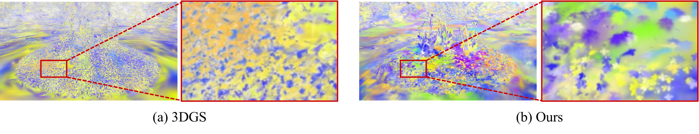

Real-world scenes are compositional: bricks, blades of grass, pebbles, and tree leaves recur across human-built and natural environments. Existing neural scene representations model these elements independently. Most 3D Gaussian Splatting and follow-up abstraction and compression methods treat each element as unique, fitting millions of independent Gaussians per scene. Prior methods like Splat and Replace fit template objects, but they require mostly manual selection of repeated elements. As a result, these representations store redundant parameters and provide weak manipulation handles for downstream tasks.
We introduce SCION, a hierarchical compositional scene representation that replaces independent Gaussians with a compact vocabulary of reusable primitives and lightweight world-space instances that place transformed copies throughout the scene. We fit this representation to multi-view captures via a joint optimization over discrete and continuous scene parameters, combining two-level densification over splats and instances with an adversarial loss that preserves detail across shared primitives. The recovered structure yields a compact, controllable representation while maintaining high quality even at 1.2 MB. SCION achieves rate-distortion favorable to existing Gaussian compression methods, and it enables instance-level scene editing and animation without retraining. Our results show that neural scene representations need not memorize scenes as independent primitives; they can discover reusable parts.
SCION represents a scene as a vocabulary C = {ck} of K reusable primitives and a set of N instances. Each primitive is a bundle of 3D Gaussians in a local frame. Each instance is a world-space placement: position, rotation, a scalar scale, an opacity bias, and one integer selecting its primitive. The representation therefore scales primarily with the number of instances (which are cheap) rather than with the number of splats.
Overview. We initialise instances from a sparse COLMAP point cloud, group them into reusable primitives with frozen DINOv3 features, assemble the selected local splats for rendering, and update the representation through image losses, projected adversarial supervision, and active densification.
Recovering this factorization is the hard part. Each primitive receives supervision through many placed copies, and averaging reconstruction losses over those copies drives templates toward blurry means — erasing exactly the high-frequency detail that makes foliage read as foliage. We address this with three ingredients: primitive-local splat birth and relocation (an MH birth rule scoped to one template at a time, so births respond to where a template is under-fit relative to its own rows), world-space instance density control (pruning, cloning and subdivision), and a projected adversarial loss on the splat-pass render that preserves per-instance sharpness under sharing.
Building a scene, one group of primitives at a time. Primitives are grouped by what they depict (bushes, grass, walls, table, paving, tree) and every instance is placed whole, with the on-disk size accumulating from 0 MB to 1.45 MB. The finished scene is then shown as per-pixel primitive assignment, reuse frequency and depth.
The learned representation exposes controls that a flat set of splats would not have. For example, if we want to expand a grass field, we can simply re-use reconstructed primitives - simplifying editing and preserving appearance. To avoid repetition, rotation, scale and opacity are of new/changed instances are resampled from the target primitive's empirical distribution. Nothing is retrained.
Interactive editor. A brush stroke selects instances; a text query retrieves a target primitive; the selection is reassigned. Every instance of the affected primitive updates at once.
When animating a standard 3DGS scene, each Gaussian is indepdent, so scene elements represented by many splats cannot move coherently: as such, splats belonging to, e.g. a single flower, receive inconsistent local motion and the shape breaks. In SCION, motion can be applied through the complete instance, so all splats in a reused primitive share one displacement and elements retain their shape.
Same wind, two representations. Left: per-splat transformation of a flat 3DGS field. Right: SCION, driving the same field through instance transforms.

Flow maps for the same wind animation applied to (a) 3DGS and (b) SCION. Per-splat transformations produce incoherent local motion; SCION moves repeated scene elements coherently through instance transforms.
Decomposing LEGO. A synthetic scene pulled apart into its recovered primitives, then reassembled. The scene is rebuilt entirely from repeated copies of a handful of learned parts.
Assignment, frequency and depth across scenes: which primitive each region selects, and how often it is reused.
@inproceedings{scion2026koch,
title = {SCION: Scene Composition with Instanced Neural Primitives},
author = {Koch, William and Joshi, Amogh and Vachha, Cyrus and Zheng, Cheng and Heide, Felix},
booktitle = {Advances in Neural Information Processing Systems (NeurIPS)},
year = {2026}
}